選單列、通知與搜尋
其他都在畫面上方
目前 App 的選單、聲音與亮度、行事曆、通知和搜尋，都從畫面上方這一列開始。按它也不會搶走你正在輸入的 App 的焦點。
選單列
01
目前 App 的選單，就在上方
有選單的 App，照原樣顯示它的選單。瀏覽器、檔案總管、Notion 這類沒有選單的 App，則把常用快速鍵做成選單。按一下項目，快速鍵就會直接送到 App，在遠端桌面這類按鍵不容易傳過去的情況下也很方便。


02
聲音和亮度，一鍵調整
在控制中心可以直接調整螢幕亮度、夜間模式和電源模式。聲音選單可切換輸出、輸入裝置和音量，藍牙選單按一下就能連上耳機。

03
按一下時鐘，打開行事曆
行事曆會顯示韓國國定假日和農曆（尚不支援其他國家或地區的假日）。貼上 Google 日曆或 Outlook.com 的 iCal 網址，行程也會一起顯示。

通知
04
右上角的安靜橫幅
Windows 通知會以橫幅顯示在畫面右上角，較長的通知按一下即可展開。錯過的通知，按一下時鐘就能依 App 分組查看。
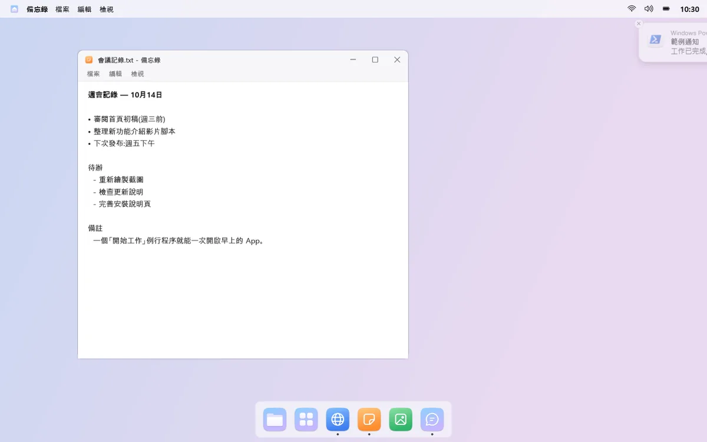
05
跳兩下，留個點
收到通知時，該 App 的 Dock 圖示會跳兩下，然後留下一個紅點。不會一直跳，也可以依 App 個別關閉。
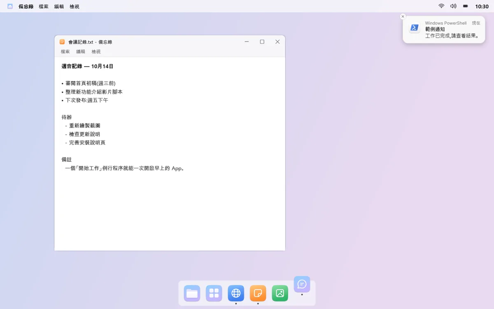
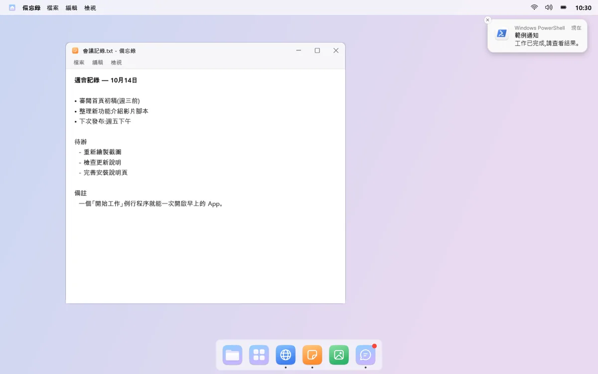
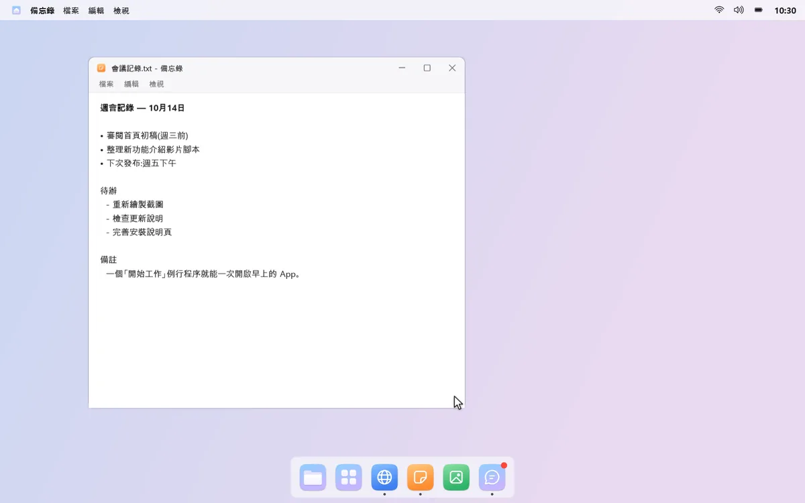
mongdock 搜尋
06
打幾個字就找到
按下快速鍵，畫面中央就會開啟搜尋框。App、Windows 設定、檔案和資料夾，打幾個字就能找到，例如輸入「小」就能找到小算盤。
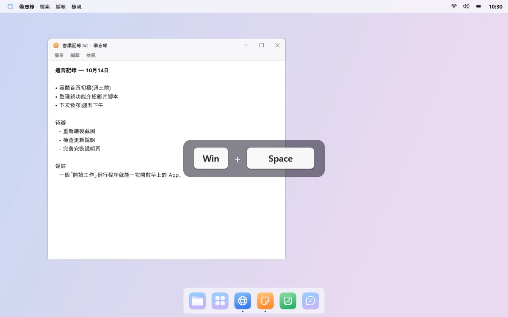

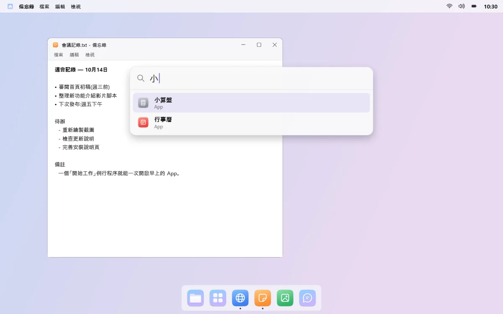
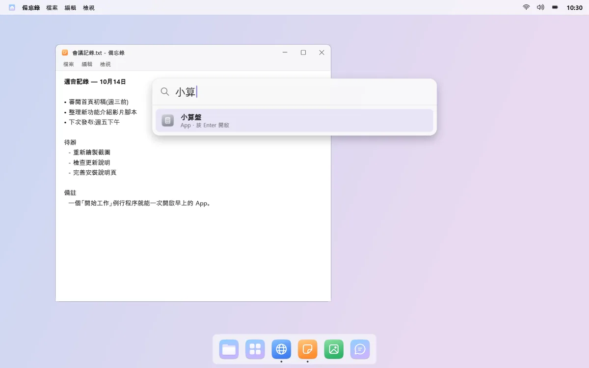
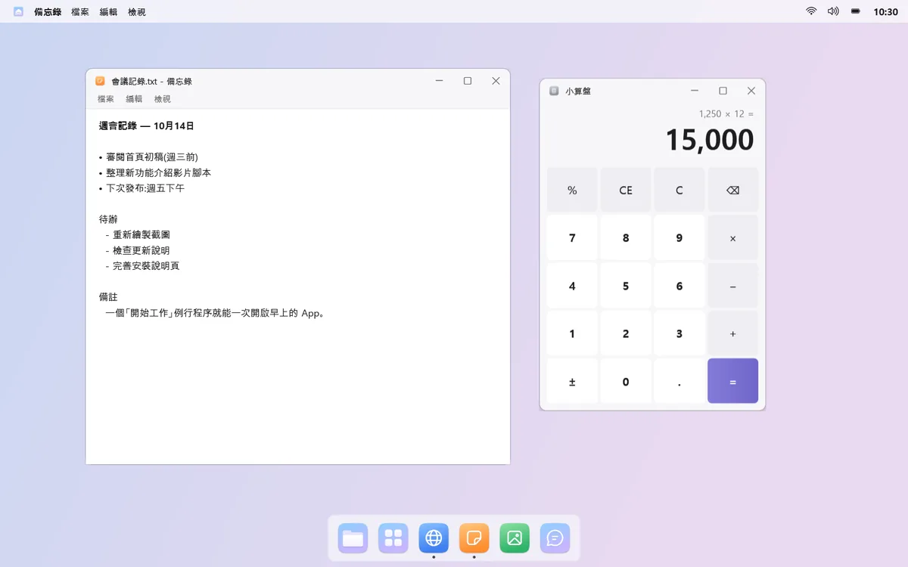
07
算數、網頁搜尋也行
輸入像「200*15%」這樣的算式，答案就會顯示在最上面，按 Enter 即可複製。找不到時，可以把同樣的關鍵字交給 Windows 搜尋或網頁搜尋。
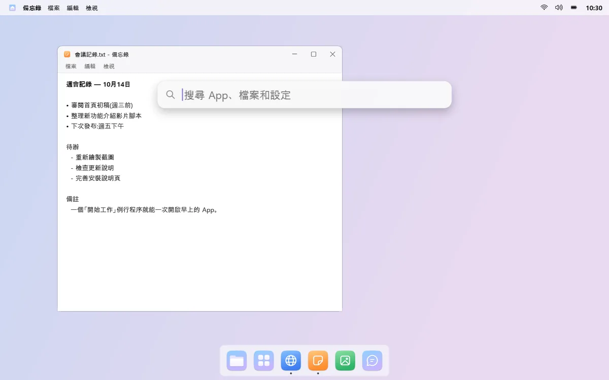
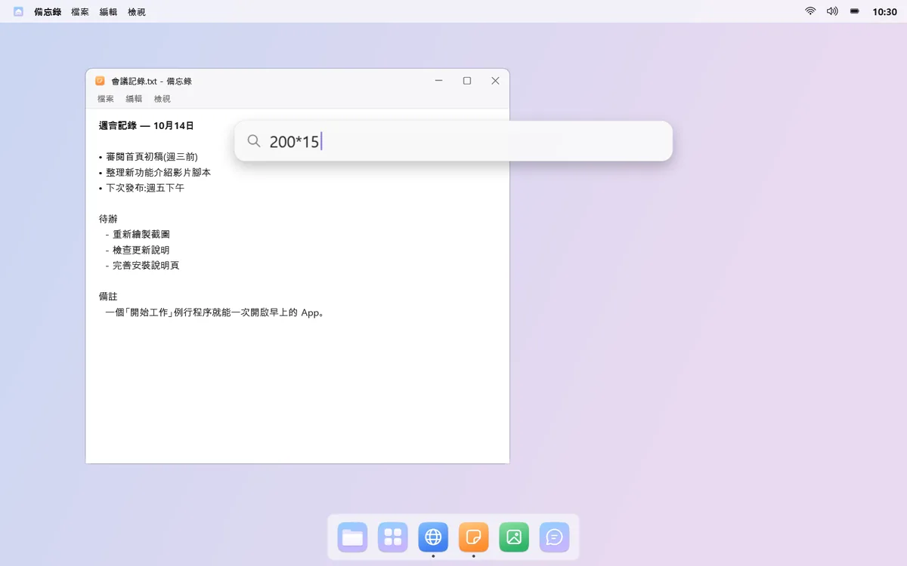
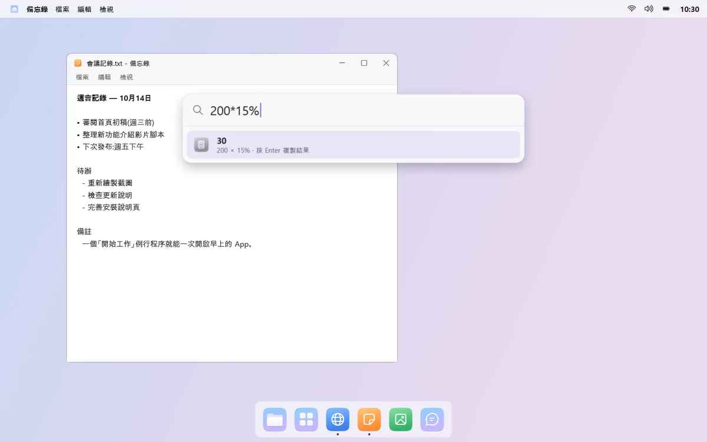
須知
- 第一次變更通知音效後，需要登出再重新登入才會生效。
- 外接顯示器的亮度，只能在支援亮度調整（DDC/CI）的顯示器上調整。